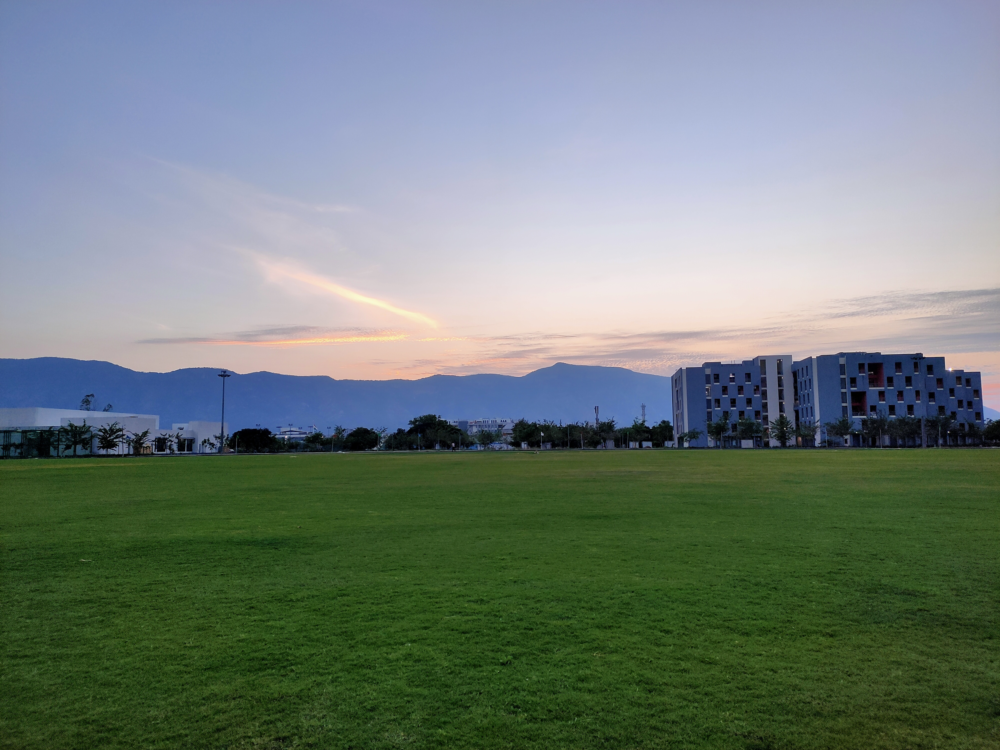

Sarthak Hazra
Final-year BS-MS student in Mathematics at IISER Tirupati, currently writing my Master's thesis in the Department of Mathematical Sciences at IISER Mohali.
Research & Geometric Foundations
Degrees of Loci in Projective Constructions and their Degenerations
Many enumerative questions ask for the degree of a locus—a variety cut out by a geometric condition inside a parameter space. When a projective construction degenerates, naive degree counts drop or break as loci acquire excess components. My thesis investigates the algebraic mechanisms behind these degree-drop phenomena using the machinery of William Fulton’s Intersection Theory, where Bézout's theorem in the plane, $$\sum_{p \in C \cap D} i(p; C \cdot D) = \deg C \cdot \deg D,$$ is the first chapter of a much larger story.
Introduction to Schemes
Studied sheaves, the prime spectrum $\mathrm{Spec}\,A$ with the Zariski topology, morphisms of schemes, quasi-coherent sheaves of modules, and divisors following Robin Hartshorne’s Algebraic Geometry (Chapter II).
Affine & Projective Algebraic Geometry
Worked through Hilbert's Nullstellensatz, regular maps, dimension theory, ringed space structures on varieties, tangent spaces, tangent cones, and local singularities following J. S. Milne's notes.
Playground: Bézout, live
Two plane conics meet in $2 \cdot 2 = 4$ points of $\mathbb{P}^2(\mathbb{C})$, counted with multiplicity—even when one of them degenerates into a pair of lines. Drag the second conic $D_\lambda$ on the canvas and slide $\lambda$ to degenerate it. Only the real intersection points are plotted; the remaining roots have become complex conjugates.
Drag anywhere on the canvas to translate $D_\lambda$, or use the sliders below:
Notes & Talks
Classification of Principal $G$-Bundles
Expository notes and student talk on classifying spaces $BG$ and the bijection $[X, BG] \cong \mathrm{Prin}_G(X)$.
Read PDF Notes →Homology of the Sphere
Computing the reduced homology groups $\tilde{H}_k(S^n; \mathbb{Z}) \cong \mathbb{Z}$ for $k=n$ and $0$ otherwise.
Read PDF Notes →The Norm of a Multiplication Operator on $L^2$
Expository note establishing $\|M_\varphi\| = \|\varphi\|_\infty$ for $\varphi \in L^\infty$.
Read PDF Notes →About Me
Background & Off-Duty
I joined IISER Tirupati in 2022 for my integrated BS-MS in Mathematics (after completing my schooling at Seva Milani High School and Krishnath College School in Berhampur, West Bengal) and have also been part of the core team of the IISER Tirupati Math Club.
When I step away from intersection rings and projective degenerations, I enjoy quiet evening walks—where most proofs actually get unstuck—and exploring diverse cinema, with a special fondness for brilliant Indian films.
Institutional Email: sarthak_20221135@students.iisertirupati.ac.in
